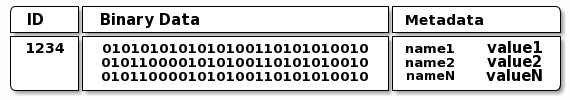

Object
- Object是ceph的最小存储单元，大小可以自己定义通常为2M或4M，每个Object都包含了在集群范围内唯一的标识OID、二进制数据、以及由一组键值对组成的元数据。
- OID是由ino与ono生成，ino是文件的file id，用于全局标识每一个文件，ono则是分片的编号。无论上层应用的是RBD、CephFS还是RADOSGW，最终都会以Object的方式存储在OSD上。当RADOS接收到来向客户端的数据写请求时，它将接收到的数据转换为Object，然后OSD守护进程将数据写入OSD文件系统上的一个文件中。

pool 和 pg
pool
- Pool是Ceph中的一些object的逻辑分组，它只是一个逻辑概念，类似于LVM中的Volume Group，类似于一个命名空间。Pool由若干个PG组成，其属性包括：所有者和访问权限、Object副本数目、PG数目和CRUSH规则集合等。用户可以对不同的Pool设置相关的优化策略，比如PG副本数、数据清洗次数、数据块及Object的Size等。当把数据写人到一个 Pool 时，首先会在CRUSH Map找到与Pool对应的规则集，这个规则集描述了Pool的副本数信息。在部署Ceph集群时会默认创建data、metadata和rbd Pool。
- 存储池通常可以为特定的应用程序或者不同类型的数据需求创建专用的存储池，如rbd存储池，rgw存储池，等等。客户端在连接到Ceph集群的时候必须指定一个存储池的名称，并完成用户名和密钥的认证方可连接至指定的存储池。
- 存储池类型
- 通过存储池的使用类型有rbd存储池，个人存储池等。按存储池的官方类型可以将存储池分为副本池（replicated）和纠删码池（ erasure code ）
- 副本池：默认的存储池类型，把每个存入的对象（Object）存储为多个副本，其中分为主副本和从副本，从副本相当于备份副本。如果客户端在上传对象的时候不指定副本数，默认为3个副本。
- 纠删码池：此类型会将数据存储为K+M，其中K数据块数量。每个对象存储到Ceph集群的时候会分成多个数据块分开进行存储。而M为为编码块，也代表最多容忍可坏的数据块数量。
- 通过存储池的使用类型有rbd存储池，个人存储池等。按存储池的官方类型可以将存储池分为副本池（replicated）和纠删码池（ erasure code ）
PG (ceph placement Groups)
- Ceph采用Placement Group来存储数据对象，同时PG也是一个Pool的子集。Ceph把很多PG在分散Pool中，然后通过获取到集群的map信息和状态通过crush算法把pg伪随机分布到集群的osd中。
- PG相当于一个虚拟组件，出于集群伸缩，性能方面的考虑。Ceph将每个存储池分为多个PG，如果存储池为副本池类型，并会给该存储池每个PG分配一个主OSD和多个从OSD，当数据量大的时候PG将均衡的分布在集群中的每个OSD上面。
- PG（ placement group）是一个放置策略组，它是对象的集合，该集合里的所有对象都具有相同的放置策略；简单点说就是相同PG内的对象都会放到相同的硬盘上； PG是 ceph的核心概念， 服务端数据均衡和恢复的最小粒度就是PG；
- PG是一些Objects的集合，这些objects组成一个group，放在某些OSD上（place），组合起来就是Placement Group。将objects以PG为单位进行管理，有以下好处：
- 集群中的PG数目经过规划因为严格可控，使得基于PG可以精准控制单个OSD乃至整个节点的资源消耗，如CPU、内存、网络带宽等
- 因为集群中的PG数目远小于objects数目，并且PG数目和每个PG的身份相对固定，以PG为单位进行数据备份策略和数据同步、迁移等，相较于直接以对象为单位而言，难度更小且更加灵活
PG特点
-
POOL 和 PG 数
- Pool： 是ceph存储数据时的逻辑分区，它起到namespace的作用。每个pool包含一定数量(可配置) 的PG。PG里的对象被映射到不同的Object上。pool是分布到整个集群的。 pool可以做故障隔离域，根据不同的用户场景不统一进行隔离。
- 支持两种类型：副本（replicated）和 纠删码（ Erasure Code）
- 副本（replicated）：即复制，例如三副本，即为该Pool内的PG会复制三份
- 纠删码（Erasure Code）：是一种编码容错技术，其基本原理就是把传输的信号分段，加入一定的校验再让各段间发生相互关联，即使在传输过程中丢失部分信号，接收端仍然能通过算法将完整的信息计算出来。在数据存储中，纠删码将数据分割成片段，把冗余数据块扩展和编码，并将其存储在不同的位置，比如磁盘、存储节点或者其他地理位置。用更少的空间实现存储，即节约空间
- pg 跟 pool 关联，一个pool有多少个pg，跟osd数相关
- Ceph官方给的计算方式为：https://ceph.com/pgcalc/
- 根据以下的官方介绍，结合自身集群的规模大小（OSD多少）去计算合理的PG数

计算PG数
计算ceph集群中的PG数公式：
- PG总数=（OSD总数*100）/副本数
- 结果必须舍入到最接近2的N次幂的值。
计算每个Pool的PG数，公式：
- PG总数=（（OSD总数*100）/副本数）/Pool数
- 结果必须舍入到最接近2的N次幂的值。
根据官方计算出：（使用3副本模式）
- 5 个 osd时，设置128个pg
- 10个 osd 时，设置256个pg。
- 100个 osd 时，设置2048个pg。
注： 一旦设置pg和pgp数量，最好就不需要再调整，否则会引发数据的大量迁移。如果一定要调整，请确保调整前，集群是ok状态；
严格意义上来说，我们无论为池分配多少个 pg 都没有问题。但有时候 pg_num 配置小了集群状态会报错，配置大了也会报错。这不是因为这么配置不对，是因为有其它的参数在限制我们随意配置 pg_num。
创建
- 当用户创建pool过程中，crush来创建这个pool中的pg数量。通常来讲PGs的数量应该是一个合理数值。例如每个osd中有100PG。这就意味着每个pg包含了整个pool的1%的数据。
- PGs的数量会影响性能，这涉及到pg在osd之间的移动。如果出现了osd的故障或者异常情况，一个pool有少量的pg,ceph会迁移大量pg，到一个可用的osd中，同时pg中包含了大量的数据对象，这涉及的迁移数据量太多对于集群性能影响调大。如果一个pool中包含了非常多的pg,虽然迁移的数据量小了，但是会消耗更多的CPU和内存。一般会采用如下公式进行计算PG的数量
1
2
3(OSDs * 100)
Total PGs = ------------
pool size
多副本的寻址和消息返回流程 （从osd的寻找）
- 和ceph客户端一样，ceph的osd可以从ceph monitor获取最新的cluster map信息。ceph的osd可以使用crush算法，osd使用crush算法数据对象存储需要的pg id和主osd。当客户端写数据对象到主的osd,主的osd发现需要些副本，这个是副本的值是通过osd_pool_default_size来定义，然后主的osd拿到object id、pool名称、集群的map,然后使用cursh算法来计算从的osd的位置，然后主osd通过集群网络写数据对象到从的osd，完成后主的osd通知客户端写入成功。
- 客户端会先tcp连接到Monitor，从中获取Cluster Map，并在客户端进行计算，当知道对象的位置后，再直接与OSD通信（去中心化的思想）。OSD节点平常会向Monitor节点发送简单心跳，只有当添加、删除或者出现异常状况时，才会自动上报信息给Monitor。
- 在Ceph中，如果要写数据，只能向主OSD写，然后再由主OSD向从OSD同步地写，只有当从OSD返回结果给主OSD后，主OSD才会向客户端报告写入完成的消息。如果要读数据，不会使用读写分离，而是也需要先向主OSD发请求，以保证数据的强一致性。
Crush 规则集
-
转载请注明来源，欢迎对文章中的引用来源进行考证，欢迎指出任何有错误或不够清晰的表达。可以在下面评论区评论，也可以邮件至 1065016533@qq.com